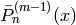
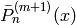
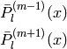
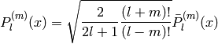
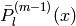

antenna¶
This module handles antennas in pylayers
To instantiate an antenna object :
typ indicates the antenna file format to read
Examples¶
>>> from pylayers.antprop.antenna import *
>>> A = Antenna('mat','S1R1.mat','ant/UWBAN/Matfile')
The antenna can be represented in various formats
.vsh2 .vsh3
- pylayers.antprop.antenna.AFLegendre(N, M, x)[source]¶
calculate Pmm1n and Pmp1n
Parameters : N : int
max order (theta) (also called l or level )
- M : int
max degree (phi)
- x : np.array
function argument
Returns : Pmm1l : ndarray ( Ndir, M , L )

Pmp1l : ndarray ( Ndir, M , L )

See also
Notes
- This function returns :

Where

Examples
>>> Pmm1n,Pmp1n = AFLegendre(5,4,np.array([0,1]))
- pylayers.antprop.antenna.AFLegendre2(L, M, x)[source]¶
calculate Pmm1l and Pmp1l
Parameters : L : int
max order (theta) (also called l or level )
- M : int
max degree (phi)
- x : np.array
function argument
Returns : Pmm1l : ndarray (Nx , L , M )

Pmp1l : ndarray (Nx , L , M )

See also
Notes
L has to be greater or equal than M
Examples
>>> Pmm1l,Pmp1l = AFLegendre2(5,4,np.array([0,1]))
- pylayers.antprop.antenna.AFLegendre3(L, M, x)[source]¶
calculate Pmm1l and Pmp1l
Parameters : L : int
max order (theta) (also called l or level )
- M : int
max degree (phi)
- x : np.array
function argument
Returns : Pmm1l : ndarray (Nx , L , M )
Pmp1l : ndarray (Nx , L , M )
See also
Notes
L has to be greater or equal than M
Examples
>>> Pmm1l,Pmp1l = AFLegendre3(5,4,np.array([0,1]))
- class pylayers.antprop.antenna.Antenna(typ, _filename='', directory='ant', nf=104, ntheta=181, nphi=90)[source]¶
Class Antenna
Attributes : name : Antenna name
Nf : number of frequency
Nt : number of theta
Np : number of phi
Ftheta : Normalized Ftheta (nf,ntheta,nphi)
Fphi : Normalized Fphi (nf,ntheta,nphi)
SqG : Square root of gain (nf,ntheta,nphi)
Ttheta : theta (nf,ntheta,nphi)
Tphi : phi (nf,ntheta,nphi)
theta : theta base 1 x ntheta
phi : phi base 1 x phi
C : VSH Coefficients
Methods : info() : Display information about antenna
vsh() : calculates Vector Spherical Harmonics
show3_geom() : Geomview diagram
show3() : 3D diagram plotting using matplotlib toolkit
Fsynth2 : Antenna F synthesis from coeff in s2
Antenna trx file can be stored in various order :
natural : HFSS bcp : near filed chamber
It is important when initializing an antenna object to be aware of the typ of trx file :
.trx (ASCII Vectorial antenna Pattern) :
F Phi Theta Fphi Ftheta :
- Fsynth1(theta, phi)[source]¶
calculate complex antenna pattern from VSH Coefficients (shape 1)
Parameters : theta : ndarray (1xNdir)
phi : ndarray (1xNdir)
k : int
frequency index
- Fsynth2(theta, phi)[source]¶
pattern synthesis from shape 2 vsh coeff
Parameters : theta :
phi :
Notes
Calculate complex antenna pattern from VSH Coefficients (shape 2) for the specified directions (theta,phi) theta and phi arrays needs to have the same size
- Fsynth2b(theta, phi)[source]¶
pattern synthesis from shape 2 vsh coefficients
Parameters : theta :
phi :
Notes
Calculate complex antenna pattern from VSH Coefficients (shape 2) for the specified directions (theta,phi) theta and phi arrays needs to have the same size
- Fsynth3(theta, phi)[source]¶
synthesis of a complex antenna pattern from VSH coefficients (shape 3)
Let Ndir be the number of directions
Parameters : theta : ndarray (1xNdir)
phi : ndarray (1xNdir)
Returns : Fth : ndarray (1xNdir)
Fph : ndarray (1xNdir)
Examples
>>> from pylayers.antprop.antenna import * >>> import numpy as np >>> import matplotlib.pylab as plt >>> A = Antenna('vsh3','defant.vsh3') >>> theta = np.linspace(0,np.pi,70) >>> phi = np.linspace(0,2*np.pi,180) >>> th = np.kron(theta,np.ones(len(phi))) >>> ph = np.kron(np.ones(len(theta)),phi) >>> Fth,Fph = A.Fsynth3(th,ph)
- cart2pol(Fx, Fy, Fz, ith)[source]¶
Conversion Fx,Fy,Fz vers Ftheta, Fphi for theta=ith Parameters ———- Fx Fy Fz ith : theta index
- checkpole(kf=0)[source]¶
display the reconstructed field on pole for integrity verification
Parameters : kf : int
frequency index default 0
- elec_delay()[source]¶
apply an electrical delay
Notes
This function apply an electrical delay math::exp{2 j pi f tau) on the phase of diagram math::F_{\theta} and math::F_{phi}
- errel(lmax, kf, dsf, typ='s3')[source]¶
calculates error between antenna pattern and reference pattern
This function works for a single frequency point
Parameters : lmax : integer
maximum order
kf : integer
frequency index
dsf : down sampling factor
Returns : errelTh : float
relative error on

errelPh : float
relative error on

errel : float
Notes

- getdelay(freq, delayCandidates=array([-10., -9.999, -9.998, ..., 9.997, 9.998, 9.999]))[source]¶
getelectrical delay
Parameters : delayCandidates : ndarray
default np.arange(-10,10,0.001)
Returns : electricalDelay : float
Author : Troels Pedersen (Aalborg University)
B.Uguen
- info()[source]¶
gives info about antenna object
>>> A1 = Antenna('trx','defant.trx') >>> A2 = Antenna('vsh3','defant.vsh3') >>> A3 = Antenna('mat','S1R1.mat','ant/UWBAN/Matfile')
- load_trx(directory='ant', nf=104, ntheta=181, nphi=90, ncol=6)[source]¶
load a trx file
Parameters : directory : str
directory where to find the file
- loadmat(directory='ant')[source]¶
load an antenna stored in a mat file
Parameters : directory : str , optional
default ‘ant’
>>> import matplotlib.pyplot as plt >>> from pylayers.antprop.antenna import * >>> A = Antenna('mat','S1R1.mat','ant/UWBAN/Matfile') >>> pol1 = plt.polar(A.phi,abs(A.Ftheta[10,45,:]),'b') >>> pol2 = plt.polar(A.phi,abs(A.Ftheta[20,45,:]),'r') >>> pol3 = plt.polar(A.phi,abs(A.Ftheta[30,45,:]),'g') >>> txt = plt.title('S1R1 antenna : st loadmat') >>> plt.show()
(Source code, png, hires.png, pdf)

- loadtrx(directory)[source]¶
load trx file (SATIMO Near Field Chamber raw data)
Parameters : directory :
self._filename: short name of the antenna file :
the file is seek in the $BASENAME/ant directory :
.. todo: :
consider using an ini file for the header
Trx header structure :
fmin fmax Nf phmin phmax Nphi thmin thmax Ntheta #EDelay :
0 1 2 3 4 5 6 7 8 9 :
1 10 121 0 6.19 72 0 3.14 37 0 :
- loadvsh3()[source]¶
Load antenna’s vsh3 file
it contains a thesholded version of vsh coefficients in shape 3
- minsh3(emax=0.05)[source]¶
Create antenna’s vsh3 file which only contains the significant vsh coefficients in shape 3, in order to obtain a reconstruction maximal error = emax
This function requires a reading of .trx file before being executed
Parameters : emax : float
error default 0.05
- mse(Fth, Fph, N=0)[source]¶
mean square error
Parameters : Fth : np.array
Fph : np.array
N : int
Notes
Calculate the relative mean square error between original pattern A.Ftheta , A.Fphi and the pattern given as argument of the function Fth , Fph
The mse is evaluated on both polarization and normalized over the energy of each original pattern.
The function returns the maximum between those two errors
N is a parameter which allows to suppress value at the pole for the calculation of the error if N=0 all values are kept else N < n < Nt - N
- pol2cart(ith)[source]¶
Conversion FTheta, FPhi to Fx,Fy,Fz for theta=ith
Parameters : ith : theta index
- pol3d(k=0, R=50, St=1, Sp=1, silent=False)[source]¶
Display polarisation diagram in 3D
pol3d(k=0,R=1,St=1,Sp=1,silent=False):
Parameters : k : int
frequency index
R : float
Radius of the sphere
St : int
Downsampling factor along theta
Sp : int
Downsampling factor along phi
silent : Boolean
(If True the file is created and not displayed’)
The file created is named : Polar{ifreq}.list
it is placed in the /geom directory of the project :
- polar(k=[0], it=0, ip=-1, dyn=6, GmaxdB=20, alpha=0.1)[source]¶
polar plot
Parameters : k : list of int
frequency index (default 0)
it : int
theta index (default 0)
ip : int
phi index (default -1)
GmaxdB : :
Max Gain (dB)
dyn : :
dynamic number of 5dB step
alpha : float
default 0.1
Examples
>>> import matplotlib.pyplot as plt >>> from pylayers.antprop.antenna import * >>> A = Antenna('trx1','defant.trx') >>> A.polar(k=[0,10,50]) >>> plt.show()
- class pylayers.antprop.antenna.SHCoeff(typ, fmin=0.6, fmax=6, data=array([], dtype=float64), ind=array([], dtype=float64), k=array([], dtype=float64))[source]¶
Spherical Harmonics Coefficient
d = np.array [Nf,N+1,M+1]
Attributes : s1 shape 1 np.array [ Nf x (N+1) x (M+1) ] :
s2 shape 2 np.array [ Nf x (N+1)*(M+1) ] :
s3 shape 3 np.array [ Nf x K ] :
ind [ K x 2] :
- delete(ind, typ)[source]¶
delete coeff
Parameters : ind : int
typ : int
2 shape 2 (Nf , N*M ) 3 shape 3 (Nf , K ) T ( K x 2 )
- inits3(data, ind, k)[source]¶
initialize shape 3 format
Parameters : data : shape 3 data
ind : ishape 3 indexing k : k
- put(typ)[source]¶
recover last deleted coeff
Parameters : typ : int
2 : shape 2 (Nf , N*M ) 3 : shape 3 (Nf , K ) T ( K x 2 )
- s1tos2(N2=-1)[source]¶
convert shape 1 –> shape 2
shape 1 array [ Nf x (N+1) x (M+1) ] shape 2 array [ Nf x (N+1)*(M+1) ]
n = 0...N2 m = 0...N2
Parameters : N2 : int <= N1
shape 1 has 3 axis - shape 2 has 2 axis by default all s1 coefficients are kept N2=-1 means N2=min(N1,M1) because M2 must be equal to N2
See also
- s3tos2()[source]¶
transform shape3 to shape 2
s2 shape 2 array [ Nf x (L+1)*(M+1) ] s3 shape 3 array [ Nf x K ] ind [ K x 2]
Notes
The shape of s2 is (Lmax+1)*(Lmax+2)/2
k2 : is the list of conserved indices in shape 3 ind3 : np.array (K3, 2) are the conserved (l,m) indices
ind3 and k2 have one common dimension
- show(typ='s1', k=0, N=-1, M=-1, kmax=1000, seuildb=50, titre='SHC', xl=True, yl=True, fontsize=14, dB=True, cmap=<matplotlib.colors.LinearSegmentedColormap object at 0xab2af8c>, anim=True)[source]¶
show coeff
Parameters : typ : string
default (‘s1’) ‘s1’ shape 1 (Nf , N , M ) ‘s2’ shape 2 (Nf , N*M ) ‘s3’ shape 3 (Nf , K ) T ( K x 2 )
k : integer
frequency index default 0
N, M = maximal value for degree, mode respectively :
(not to be defined if ‘s2’ or ‘s3’) :
- class pylayers.antprop.antenna.VSHCoeff(Br, Bi, Cr, Ci)[source]¶
Vector Spherical Harmonics Coefficients class
Attributes : Bi :
Br :
Ci :
Cr :
Notes
Br = SHCoeff(br) Bi = SHCoeff(bi) Cr = SHCoeff(cr) Ci = SHCoeff(ci) C = VSHCoeff(Br,Bi,Cr,Ci)
- ens3()[source]¶
return sorted energy values from minimal to maximal value
Returns : Es :
sorted energy values
u :
index
- s1tos2(N2=-1)[source]¶
convert shape 1 to shape 2
Parameters : N2 : max level
default (-1 means all values)
- s2tos3(threshold=1e-20)[source]¶
convert vector spherical coefficient from shape 2 to shape 3
Parameters : threshold : float
default 1e-20
Energy thresholded coefficients :
This thresholding doesn’t work :
- pylayers.antprop.antenna.VW(n, m, x, phi, Pmm1n, Pmp1n)[source]¶
evaluate vector Spherical Harmonics basis functions
Parameters : n : int
level
m : int
mode
x : np.array
function argument
phi : np.array
Pmm1n : Legendre Polynomial
Pmp1n : Legendre Polynomial
Returns : V :
W :
See also
Examples
>>> from pylayers.antprop.antenna import * >>> N = 2
- pylayers.antprop.antenna.VW2(l, m, x, phi, Pmm1l, Pmp1l)[source]¶
evaluate vector Spherical Harmonics basis functions
Parameters : l : ndarray (1 x K)
level
m : ndarray (1 x K)
mode
x : ndarray (1 x Nray)
phi : np.array (1 x Nray)
Pmm1l : Legendre Polynomial
Pmp1l : Legendre Polynomial
Returns : V : ndarray (Nray , L, M)
W : ndarray (Nray , L, M)
See also
AFLegendre, Nx
- pylayers.antprop.antenna.VW3(l, m, theta, phi)[source]¶
evaluate vector Spherical Harmonics basis functions
Parameters : l : ndarray (1 x K)
level
m : ndarray (1 x K)
mode
theta : np.array (1 x Nray)
phi : np.array (1 x Nray)
Returns : V : ndarray (Nray , L, M)
W : ndarray (Nray , L, M)
See also
AFLegendre, Nray
- pylayers.antprop.antenna.compdiag(k, A, th, ph, Fthr, Fphr, typ='modulus', lang='english', fontsize=18)[source]¶
Comparison between Antenna diagram and reconstructed diagram
Parameters : k : frequency index
A : Antenna
ph : phi base (1 x Np)
th : theta base (1 x Nt)
Fthr : Fth output of Fsynth Nf x (Ntheta*Tphi)
Fphr : Fth output of Fsynth Nf x (Ntheta*Tphi)
lang = ‘french’ :
= ‘english’
- pylayers.antprop.antenna.forcesympol(A)[source]¶
calculate A.Ftheta and A.Fphi in order to obtain A.SqG continuous at poles (theta=0,pi) for each frequency values
Parameters : A : Antenna object
- pylayers.antprop.antenna.geom_pattern(theta, phi, E, f, p, minr, maxr, racine, ilog=False)[source]¶
export antenna pattern in geomview format
Parameters : theta : np.array (1 x Ntheta)
phi : np.array (1 x Nphi)
E : np.array complex (Ntheta,Nphi)
f : frequency
po : origin (1x3)
minr : radius of minimum
maxr : radius of maximum
ilog : True (log) False (linear)
Returns : filename :
- pylayers.antprop.antenna.index_vsh(L, M)[source]¶
vector spherical harmonics indexing
Parameters : L : int
degree max sum(1..L) L points
M : int
order max sum(0..M) M+1 points
M <=L :
ind[0] = n :
ind[1] = m :
- pylayers.antprop.antenna.indexvsh(L)[source]¶
Parameters : L : degree max
Returns : t : ndarray ( (L+1)(L+2)/2 , 2 )
tab for indexing the upper triangle
Examples :
——– :
>>> from pylayers.antprop.antenna import * >>> indexvsh(3) array([[0, 0], [1, 0], [1, 1], [2, 0], [2, 1], [2, 2], [3, 0], [3, 1], [3, 2], [3, 3]])
- pylayers.antprop.antenna.plotVW(n, m, theta, phi, sf=False)[source]¶
plot VSH transform vsh basis in 3D plot (V in fig1 and W in fig2) Parameters ———- n,m : integer values (m<=n) theta : ndarray phi : ndarray sf : boolean
if sf : plotted figures are saved in a *.png file else : plotted figures aren’t savedExamples
>>> from pylayers.antprop.antenna import * >>> import matplotlib.pyplot as plt >>> import numpy as np >>> n=5 >>> m=3 >>> theta = np.linspace(0,np.pi,30) >>> phi = np.linspace(0,2*np.pi,60) >>> plotVW(n,m,theta,phi)


{kind=link}
{kind=link}
{kind=link}
{kind=link}
{kind=link}
{kind=link}
{kind=link}
{kind=link}
{kind=link}
{kind=link}
{kind=link}
{kind=link}
{kind=link}
{kind=link}
{kind=link}
{kind=link}
- pylayers.antprop.antenna.show3D(F, theta, phi, k, col=True)[source]¶
show 3D matplotlib diagram
Parameters : F : ndarray (Nf,Nt,Np)
theta : ndarray (1xNt)
angle
phi : ndarray (1xNp)
angle
theta : ndarray (Nt)
k : int
frequency index
col : boolean
if col -> color coded plot3D if col == False -> simple plot3D
Warning
len(theta) must be equal with shape(F)[1] len(phi) must be equal with shape(F)[2]
Examples
>>> import matplotlib.pyplot as plt >>> from pylayers.antprop.antenna import * >>> ifreq = 0 >>> A = Antenna('vsh3','defant.vsh3') >>> A.Nt = 30 >>> A.Np = 60 >>> A.Nf = len(A.fa) >>> theta = np.linspace(0,np.pi,A.Nt) >>> phi = np.linspace(0,2*np.pi,A.Np) >>> th = np.kron(theta,np.ones(A.Np)) >>> ph = np.kron(np.ones(A.Nt),phi) >>> Fth3,Fph3 = A.Fsynth3(th,ph) >>> FTh3 = Fth3.reshape(A.Nf,A.Nt,A.Np) >>> FPh3 = Fph3.reshape(A.Nf,A.Nt,A.Np) >>> show3D(FTh3,theta,phi,ifreq) >>> txt = plt.title('show3D example') >>> plt.show()
(Source code, png, hires.png, pdf)

{kind=link}
{kind=link}